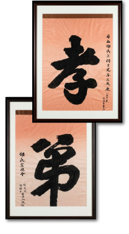
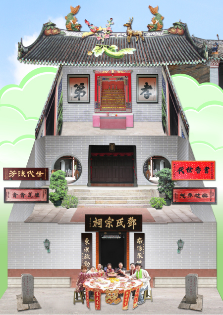
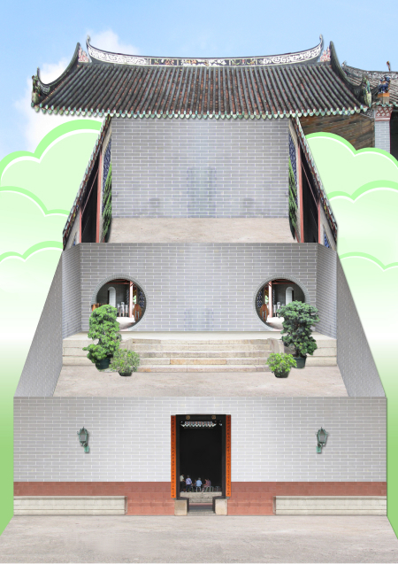
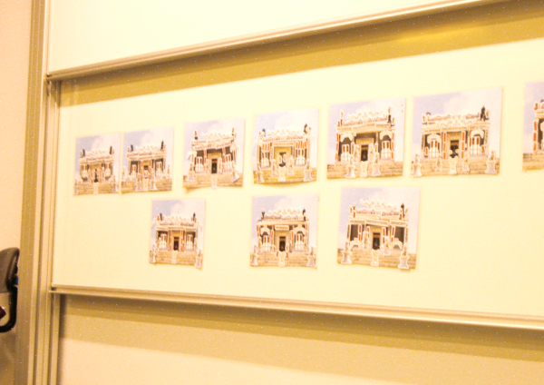

Cultural Learning Materials
Graphic Design
Research and Development
Centre for University and School Partnership, the Chinese University of Hong Kong

While working at the Centre for University and School Partnership of CUHK, I assisted in promoting traditional Chinese culture, including Chinese pictographs, music, cuisine and architecture, through workshops and field trips. Teaching materials such as puzzles were created for teachers and students, and later developed into iPod touch learning materials for use during field trips.
In this project, team spirit plays an important part. Project team members go through different pre field trips and field trips to collect raw materials and take on the responsibility of cultural heritage. In one interesting workshop, simple puzzle is decided to be used for introducing traditional Chinese architecture and culture after team discussion. The Ping Shan Tang Ancestral Hall puzzle was created. Teachers and students have to put the plaque, couplets and decoration on the puzzle board, learning the symbolic meaning behind the scene.


A puzzle for Cheung Chau Pak Tai Temple is also made for the cultural trip workshop. The material is later developed into iPod touch learning, aiming at enhancing students’ observation skills with basic traditional Chinese culture concepts. And I have the opportunity to assist in the research and development for this app, optimizing the teaching-learning result through technology.

Workshops